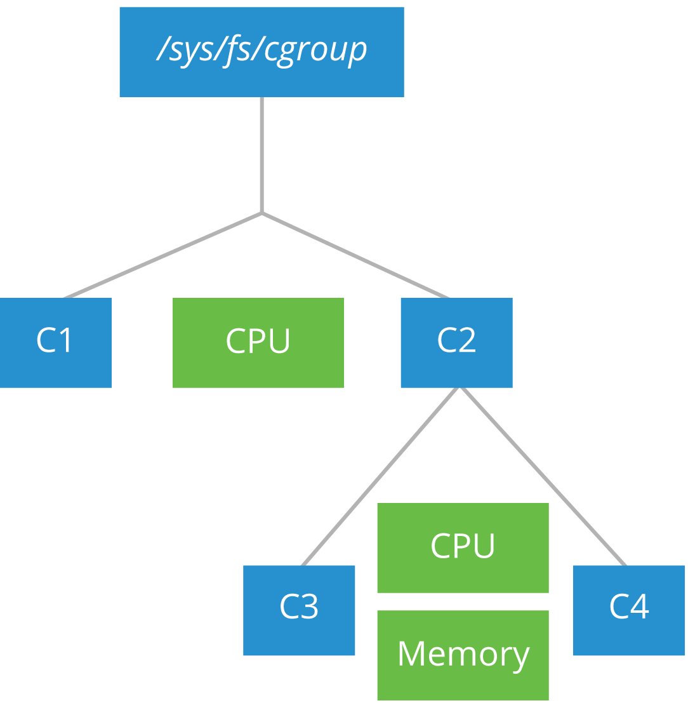
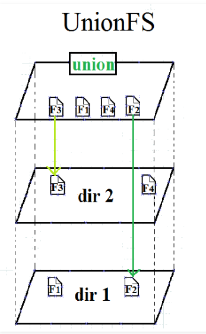
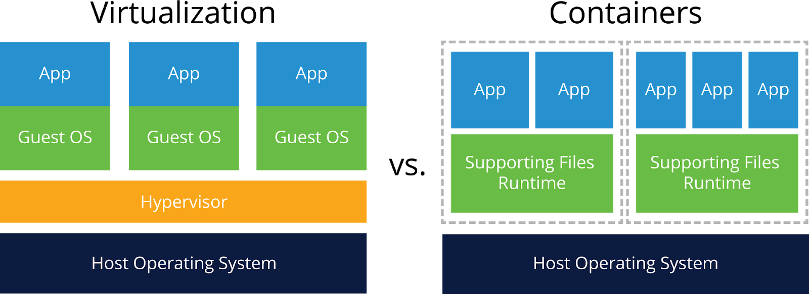
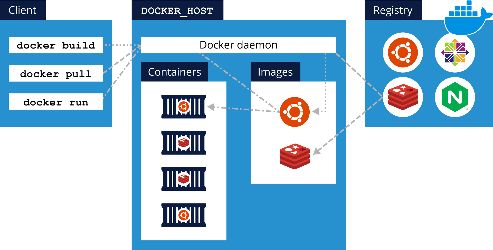

Containers Fundamentals
Virtualization Fundamentals
Control Groups (cgroups)
Control groups, known as cgroups, are a feature of the Linux kernel allowing the limitation, accounting, and isolation of resources used by groups of processes and their subgroups.

Namespaces
Namespaces are a feature of the Linux kernel allowing groups of processes to have limited visibility of the host system resources.
Unification File System (UnionFS)
UnionFS is a feature found in the Linux, FreeBSD and NetBSD kernels, allowing the overlay of separate transparent file systems to produce an apparent single unified file system.

Virtualization Mechanisms
Full Virtualization vs. Operating System-Level Virtualization
Although Containers are not considered to be Virtual Machines (VMs), not even light-weight VMs, their similarities cannot be overlooked.

A Virtual Machine is created on top of a hypervisor software. A typical application runs inside such a VM, and it requires extensive overhead to reach the physical hardware or the outside world considering that it has to go through so many layers of abstraction - the guest OS, then the hypervisor, and finally the host OS.
A container is a light-weight environment that virtualizes and isolates resources for a running application. A container allows an application to be boxed and shipped with all its dependencies. Once deployed, a container runs directly on the host operating system. As a result, the user space component of the container should be compatible with the host operating system
Operating System-Level Virtualization
Operating system-level virtualization refers to a kernel’s capability to allow the creation and existence of multiple isolated virtual environments on the same host.
As opposed to programs running inside a real environment, where they see all resources such as CPU, network, connected devices, and files, programs running inside a virtual environment are limited to its content and assigned devices.
Operating System level virtualization is typically used to limit usage and securely isolate resources shared between multiple programs or users, and to separate programs to run in their own assigned virtual environments for better security and resource management.
While Operating System level virtualization requires less overhead than full virtualization because everything is managed at the kernel level without the need to install a guest OS, it limits the OS of the virtual environments to the host Operating System.
Mechanisms Implementing Operating System-Level Virtualization
While one of the first known mechanisms to implement operating system-level virtualization dates from the early 1980s, the majority of such mechanisms known today were released after the turn of the 21st century
Chroot
Chroot is a mechanism implementing OS-level virtualization. It was first introduced on Unix Version 7 in 1979, then in 1982 it was added to BSD.
Any user process and/or its children running inside this virtual chrooted directory tree runs under the false impression that it is in the real root directory tree of the operating system.
FreeBSD Jails
A FreeBSD jail is a mechanism implementing OS-level virtualization with very little overhead. It was first introduced in 2000 on FreeBSD systems.
FreeBSD jail allows for the partitioning of a FreeBSD system into many independent systems, called jails. They share the same kernel, but virtualize the system’s files and resources for improved security and administration through clean isolation between services.
Jails become virtual environments running on the host system with virtualized filesystem, processes, and users.
Jails share the host kernel instead.
Solaris Zones
Solaris zone is a mechanism implementing OS-level virtualization. It was first introduced in 2004 on Solaris 10 systems.
Solaris zones represent securely isolated Virtual Machines on a single host system. Zones may host single or multiple applications, services, and their children. Each zone on a host system virtualizes its hostname, network, IP address, and it has assigned storage.
OpenVZ
OpenVZ is a mechanism implementing OS-level virtualization; it was first introduced in 2005 on Linux systems.
OpenVZ allows a physical host to run multiple isolated virtual instances - called containers, virtual environments or virtual private servers. OpenVZ containers share the same kernel, and can only run Linux.
Linux Containers (LXC)
LXC, or Linux Containers, is a mechanism implementing OS-level virtualization; it was first introduced in 2008 on Linux systems.
LXC allows multiple isolated systems to run on a single Linux host, using chroot and cgroups, together with namespace isolation features of the Linux kernel to limit resources, set priorities, and isolate processes, the filesystem, network and users from the host operating system.
Systemd-nspawn
Systemd-nspawn is a mechanism implementing OS-level virtualization; it was first introduced in 2010 on Linux systems.
Systemd-nspawn may be used to run a simple script or boot an entire Linux-like operating system in a container.
Container Standards and Runtimes
Container
Most times, to ease the understanding of the concept, a container is compared to a regular Virtual Machine - which is a result of full virtualization. A container, however, is the product of several OS-level virtualization features of the Linux kernel used in conjunction to build a lightweight isolated environment
There are quite a few differences as well, between VMs and containers: containers use the host kernel and are bound to boot the host OS only, and are processes running on the host system managed individually or in groups.
What Are Containers?
Application centric environments ensure an application’s efficiency, performance, and responsiveness to external factors such as load spikes and in response the application scales accordingly.
Containers are the application centric method to deliver high performing and scalable applications on any infrastructure.
This ideal solution is, in fact, a container image, and the isolated and secure execution environment created from it at runtime is a container.
Where Are Containers Deployed?
Containers are able to run anywhere.
Standards
Being able to move container images between different container runtime environments, by enabling containers to be interoperable and allowing them to integrate with third-party storage and network plugins of various projects and vendors, are just a few of the benefits of container standards.
The App Container standard has not received any new features
Container Image Standards - App Container (appc)
The App Container (appc) specification was introduced in 2014 by CoreOS in collaboration with Google and RedHat
One of the container runtimes implementing the appc specification is rkt
App Container Image
The App Container Image (ACI) defines the packaging, compression and extraction methods of files that make up the container image together with the validation of container image’s integrity.
App Container Image Discovery
The App Container Image Discovery defines how a container image name is linked to a downloadable container image.
App Container Pod
The App Container Pod defines a Pod as the deployment and execution unit for one or a group of container images.
App Container Executor
The App Container Executor (ACE) defines how to run an app container image, more specifically environment configuration for the running app, and the app’s interaction with the environment.
Container Image Standards - Open Container Initiative (OCI)
The Open Container Initiative (OCI) was introduced in 2015 by Docker together with other leaders in the container industry
One of the container runtimes implementing the OCI specification is runC.
Runtime Specification The Runtime Specification defines how to run a "filesystem bundle" that is unpacked on disk. An OCI implementation would download and unpack an OCI image into an OCI Runtime filesystem bundle. Then, an OCI Runtime would run the OCI Runtime Bundle.
The Image Specification helps with the development of compatible tools to ensure consistent container image conversion into containers.
Unification Process
To ease the unification process between the two existing standards, features of the appc standard are being merged into OCI
Container Runtimes
A container runtime is guided by a runtime specification, which describes the configuration, execution environment and the lifecycle of the container. he role of a container runtime is to provide an environment supporting basic operations with images and the running containers, that is both configurable and consistent, where container processes are able to run.
A container runtime is designed to perform some default operations under the hood as a response to user commands.
- Extracts the container image
- Stores it on an overlay filesystem
- When the runtime executes a container, it interacts with the kernel to set resource limits via control groups and namespaces.
runc
- Developed by Docker.
- runc implements the OCI specification.
- does not expose an API.
- does not provide container image management.
- does not support image build operations.
- does not provide image download or image integrity check capabilities.
- does not include a centralized daemon, it may be integrated with the Linux service manager - systemd.
containerd
- Adopt by Docker engine, Kubernetes services of IBM (IKS) and Google Cloud (GKE), Cloud Foundry, and Kata Containers.
- implements the OCI specification.
- support several container operations, (storage and transfer executing, attaching storage and network to containers.).
- used runc at low level
- containerd adds implementation for some missing, yet desired, capabilities of runc
Docker
Docker is one of the most robust and complex container development and management platforms in the container industry. Although we list it here as a container runtime, Docker is a lot more than just a simple, or not so simple, container platform. The Docker platform supports a wide range of operations, from container image management to container lifecycle and runtime management.
Earlier Docker versions were based on the Linux Containers (LXC). Then ocker decided to develop in-house its own proprietary runtime, libcontainer, its a component of runc.
Docker’s complexity is not only reflected by the multitude of operations it supports on container images and running containers, but also by its architecture. Docker is powered by the Docker Engine - a client-server application.
The Docker Engine is composed of the Docker host running the Docker daemon, a REST API to communicate with the daemon, and a Docker client

Docker client This is the command-line tool that allows users to run docker commands against a Docker daemon running on a Docker host. The client and daemon communicate through REST API, over Unix sockets or a network interface. Also, the client is capable of communicating with more than one daemon running on different Docker hosts.
Docker host The Docker host is a system running the Docker daemon - called dockerd. The daemon is responsible for building, running, and distributing Docker containers. He manage docker objects such as images, containers, networks, and volumes. He can interact with other daemons to manage distributed Docker services across multiple Docker hosts clustered together.
Docker registries The Docker registries store Docker container images.
Docker Desktop The Docker Desktop is the installer for the Docker framework components on Windows and Mac systems.
rkt
Developed by CoreOS, rkt is a simpler application container runtime that implements the modern App Container (appc) specification and relies on the Application Container Image (ACI) format.
rkt is an application container engine developed for modern production cloud-native environments.
- It features a pod-native approach.
- rkt may be integrated with systemd.
When running containers in pods, rkt goes through three different stages in execution:
- Stage 0 invokes the rkt binary in order to perform various initialization steps.
- Stage 1 isolates the pod’s environment using chroot, cgroups and namespaces.
- Stage 2 runs the applications in the environment setup by Stage 1.
rkt also supports full hardware virtualization, specific to Virtual Machines.
rkt is interoperable as well, being able to query multiple container image registries, such as quay of CoreOS, Docker Hub.
Despite its initial popularity, the rkt project reached its end.
CRI-O
CRI-O is a minimal implementation of the Container Runtime Interface (CRI) to enable the usage of any Open Container Initiative (OCI) compatible runtime with Kubernetes, a popular container orchestrator.
CRI-O supports runc and Kata Containers as the container runtimes but any OCI-conformant runtime can be plugged in instead.
The CRI-O runtime has been optimized for Kubernetes, and it also implements the Container Network Interface (CNI) for networking and supports CNI plugins.
CRI-O is packed with libraries that pull container images from registries and create container filesystems.
CRI-O also supports container security such as SELinux, capabilities or seccomp.